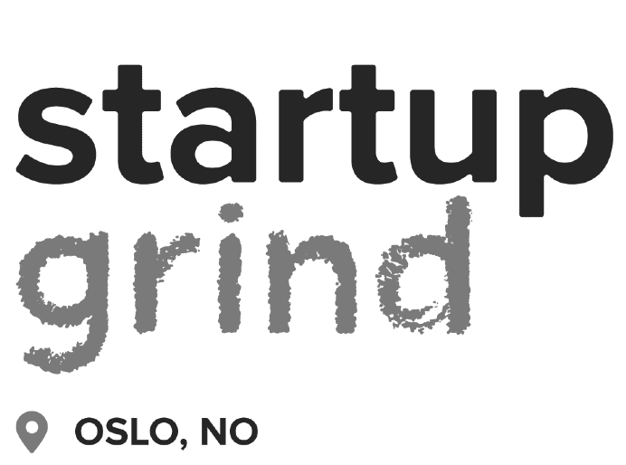
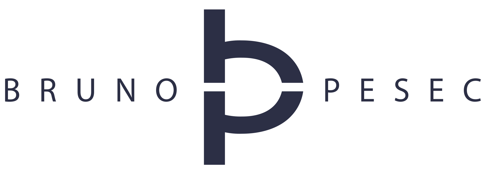
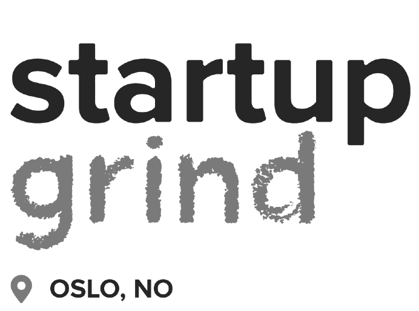
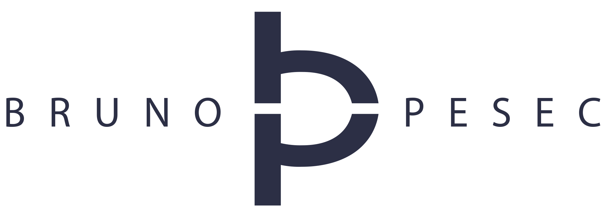

Opening
30.03
– Startups & coronavirus, how to keep business going?
– Le Wagon
– 🥠WATCH NOW
Startups
31.03
– How to work remotely?
– Young Sustainable Impact
– 🥠WATCH NOW
01.04
– Creative idea to impactful solution
– Founder Institute
– 🥠WATCH NOW
02.04
– Startup from 0 to 100
– Le Wagon
– 🥠WATCH NOW
02.04
– Careers of the future
– Le Wagon
– 🥠WATCH NOW
Product Management
06.04
– Defining your tech product
– Le Wagon
– 🥠WATCH NOW
07.04
– Avoid stupid decisions: most common cognitive biases and logical fallacies
– Founder Institute
– 🥠WATCH NOW
08.04
– Growth strategy and international market
– Founder Institute
– 🥠WATCH NOW
UI / UX
14.04
– UI design crash course
– Le Wagon
– 🥠WATCH NOW
15.04
– Accessibility for everyone!
– Finn.no
– 🥠WATCH NOW
15.04
– Workshop with Adobe XD
– Adobe
– 🥠WATCH NOW
16.04
– UX crash course
– Women in Tech
– 🥠WATCH NOW
Growth Hacking
20.04
– How to close more sales... without being annoying?
– Founder Institute
– 🥠WATCH NOW
21.04
– How to do marketing at scale without using money
– Young Sustainable Impact
– 🥠WATCH NOW
22.04
– Unstoppable lead generation for B2B
– Founder Institute
– 🥠WATCH NOW
23.04
– Get out of the elevator and do a UVP [unique value proposition] instead
– Founder Institute
– 🥠WATCH NOW
Innovation
27.04
– The startup process: key takeaways from the world's largest pre-seed accelerator
– Founder Institute
– 🥠WATCH NOW
28.04
– Prototyping your ideas without any code
– Le Wagon
– 🥠WATCH NOW
29.04
– Corporate innovation 101: advice for intrapreneurs and innovation managers
– Founder Institute
– 🥠WATCH NOW
30.04
– Creating reusable knowledge: how to design effective experiments
– Founder Institute
– 🥠WATCH NOW
Well-being
04.05
– Being 'Businessworthy': tips for leading responsibly through turbulent times
– Business for Peace
– 🥠WATCH NOW
04.05
– Conscious leadership: promoting the well-being of your team
– Generation Mobility
– Registration on Eventbrite
05.05
– Entrepreneur wellbeing: mastery of thoughts and emotions
– Founder Institute
– Registration on Eventbrite
06.05
– How to thrive as a multipotentialite
– Le Wagon
– Registration on Eventbrite
07.05
– Survive your Nordic job hunt!
– Skillfugees
– Registration on Eventbrite
Code
11.05
– Build your first landing page
– Le Wagon
– Registration on Livestorm
12.05
– Learn how to automate tasks with APIs
– Le Wagon
– Registration on Livestorm
13.05
– Do designers need to code?
– Women in Tech
– Registration on Eventbrite
13.05
– Get started
with Javascript
– Le Wagon
– Registration on Livestorm
14.05
– Web scraping with Python
– Le Wagon
– Registration on Livestorm
 


